10 April 2025
JS Fundamentals
JavaScript and its relationship to HTML and CSS.
Building a website is like making a cake.
HTML = the base of the cake - the sponge, the layers, the shape.without the cake base there is nothing.
CSS = the decoration - cream, colors, or sprinkles everything that makes the cake look beautiful.
JavaScript = the surprise inside - maybe cake has chocolate lava inside or light and music when you cut it.
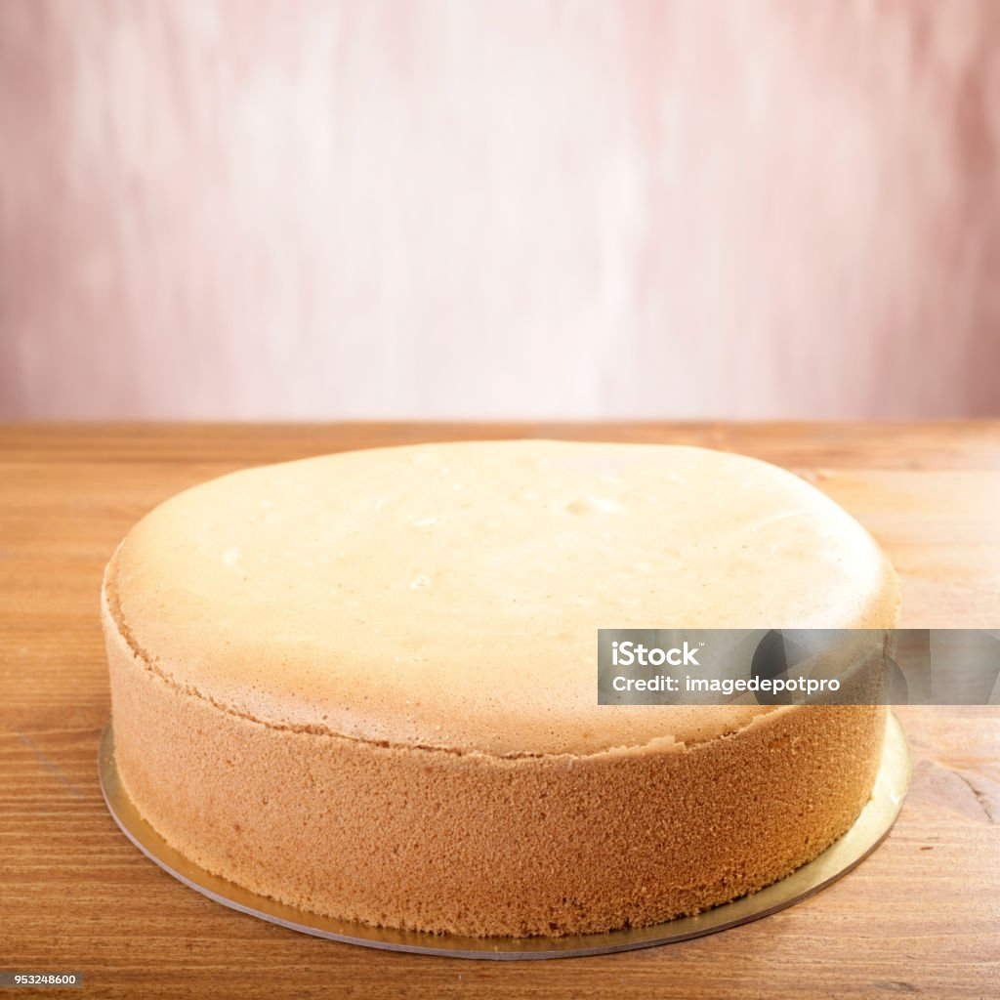
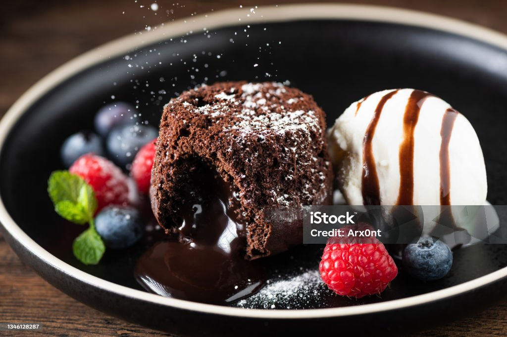
Plain HTML is like a simple cake. Adding CSS with JavaScript makes it a nice looking decorated cake.
Control flow and Loops
Control flow is like making decisions during the day. You are getting dressed for the day you might ask yourself, Is it cold outside?- If yes - wear a jacket.
- If no - just wear a t-shirt.
Control flow - choosing what to do depending on the sutuation. This simple "if-else" decision is how control flow works in programmimg.
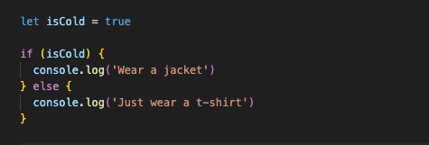
Loops is like repeating actions multiple times with saying over and over again.
Example: You have 6 donuts and 6 friends and want to give one donut to each friend.
you won't say:
"Give donut to Sarah.", "Give donut to Joseph.", "Give donut to David.", "Give donut to John.", "Give donut to Oranee.", "Give donut to Lisa."
instead you use a loop which simply say:
"Give one donut for each friend." much easier!
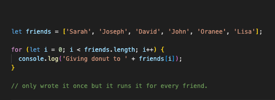
What the DOM is
DOM stands for Document Object Model Is the browser's way of
representhing an HTML page as a tree of objects.
HTML creates the structure of th page.
CSS style the elements in the DOM. The browser uses the DOM to
display.
Interacting with the DOM:
JavaScript is talking to the HTML page and changing it while the page is still open!
This is how websites can update content without reloading the whole page.
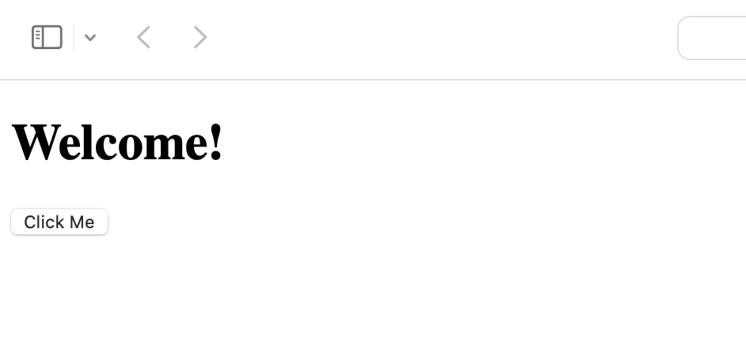
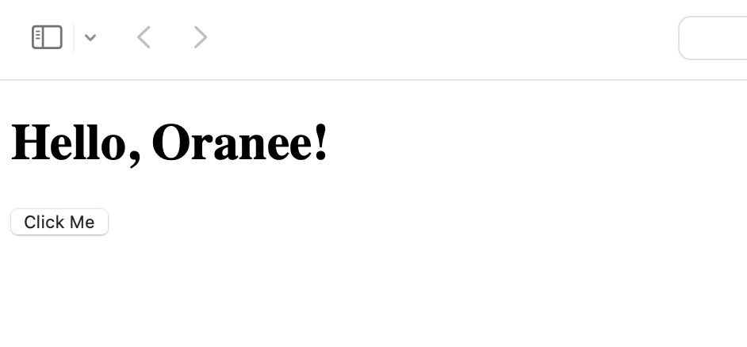
At first the page says Welcome! After clicking the button it changes to Hello, Oranee! because I used this JavaScript code.
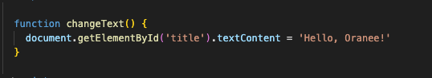
The difference between accessing data from arrays and objects.
Arrays is like a list of things (items, names, numbers etc.) that can store multiple things in one array . It helps keep your code neat and organized.
Remember, arrays start counting from 0 not 1.
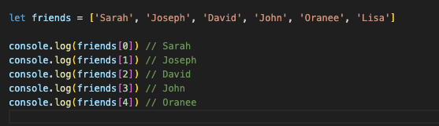
You also can use a loop through an array
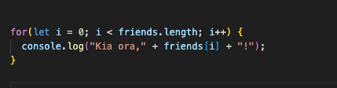
This will print:
Kia ora,Sarah!
Kia ora,Joseph!
Kia ora,David!
Kia ora,John!
Kia ora,Oranee!
Kia ora,Lisa!
Objects is like a box of information. It stores data in a key: vale format like labels on a box to discribe what is inside.
Example : This object is about one persone. It has 3 parts:- name -
- age -
- city -
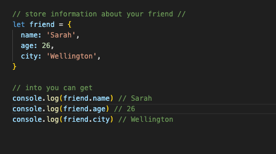
This will print:
Sarah
26
Wellington
Simple:
Array = use number to get date.
Object = use name(key) to get data.
functions
Functions is like a block of code that gives instructions to the computer to do a job. instead of writing the same thing again and again, we can write it just once inside a function and tell the computer to do whenever we need.
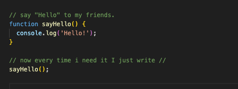
This will print:
Hello!
function = Give the computer a job.
sayHello() = Tell the computer to do the job now.
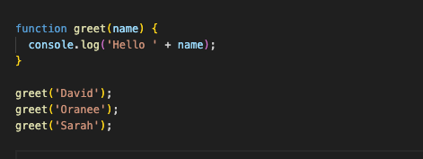
This will print:
Hello David
Hello Oranee
Hello Sarah
Why are Functions helpful: If you want to change something, you can change it only one time in the funtion.
Functions save time, make the code clean and easy can be used again and again.